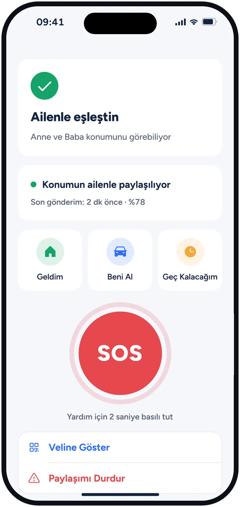

Çocuğun okula vardığında, sen sormadan haber gelsin
OkulTakip okula varış, okuldan çıkış ve eve varış bildirimlerini kendiliğinden gönderir. Hesap açmak yok: iki telefonu QR kodla 10 saniyede eşleştirirsin.
App Store'da OkulTakip'i açiPhone için. Ücretsiz planda 1 çocuk ve 1 bölge var.
Okulu bilen bildirimler
Okul, ev, dershane ya da spor salonu için haritada bir bölge belirlersin. Çocuğun bu bölgelere girip çıktığında telefonuna bildirim gelir; aramana ya da mesaj atmana gerek kalmaz.
- Okula vardı, okuldan çıktı ve eve vardı bildirimleri
- Eve varmadı uyarısı: okul çıkışından sonra belirlediğin sürede eve gelmezse haber alırsın (Premium)
- Geç kalma uyarısı: ders başladığında okulda değilse haber alırsın (Premium)
- Servis bildirimi: araca bindiğinde ve indiğinde haber gelir, Servis Kartı'ndan şoförü tek dokunuşla ararsın (Premium)
- MEB takvimini bilir: hafta sonu, resmî tatil ve ara tatilde boş uyarı göndermez; kar tatili için Bugün okul yok düğmesi var
Son konum ve günün akışı tek ekranda
Son konumu, doğruluğunu ve ne zaman güncellendiğini görürsün: tahmin değil, çocuğun telefonundan gelen bilgi. Bugün bölümünde evden çıkış, servise biniş ve okula varış saatleri sırayla durur.
- Konumu Şimdi İste ile çocuğun telefonundan hemen yeni konum alırsın (Premium)
- Okulu yakındaki okullar listesinden seçersin
- Birden fazla çocuk tek ekranda; anne, baba ya da başka bir yakın aileye katılabilir ve aynı bildirimleri alır
Depremde ilk soru: güvende misin?
Çocuğunun yakınında 4,5 ve üzeri bir deprem olursa OkulTakip bunu AFAD verisiyle fark eder ve çocuğun telefonunda Güvendeyim ya da Yardım Lazım diye sorar. Cevap anında sana gelir. Deprem modu ücretsiz planda da açıktır.
Çocuğun tek dokunuşla haber verir
Geldim, Beni Al ve Geç Kalacağım düğmeleri çocuğun bulunduğu adresle birlikte sana ulaşır. SOS düğmesine 2 saniye basılı tuttuğunda bütün veliler aynı anda haber alır. Çocuk, konumunu kimin görebildiğini kendi ekranında görür ve paylaşımı durdurabilir.

Kurulum üç adım
- Kendi telefonunda OkulTakip'i aç, Veliyim'e dokun ve çocuğunun adını yaz.
- Çocuğunun telefonunda Öğrenciyim'e dokun ve ekrandaki QR kodu okut. Uzaktaysanız linki WhatsApp ile gönder.
- Çocuğun telefonunda konum iznini Her Zaman olarak ver, okulu ve evi ekle. Gerisini OkulTakip halleder.
Bildirimlerin zamanında gelmesi için çocuğun telefonunda konum izni Her Zaman ve Kesin Konum açık olmalı. Uygulama arka planda konum kullanır; pil kullanımı bir miktar artabilir.
Ücretsiz ve Premium
| Özellik | Ücretsiz | Premium |
|---|---|---|
| Çocuk ve bölge sayısı | 1 çocuk, 1 bölge | Sınırsız |
| Bölgeye giriş ve çıkış bildirimi | Var | Var |
| SOS, Geldim, Beni Al, Geç Kalacağım | Var | Var |
| Deprem modu ve pil uyarısı | Var | Var |
| Servis ve gece yolculuğu bildirimi | Yok | Var |
| Eve varmadı ve geç kalma uyarısı | Yok | Var |
| Konum izni ve düşük güç modu uyarısı | Yok | Var |
| Konumu Şimdi İste | Yok | Var |
Premium bir kez alınır, bütün aile (bütün veliler ve çocuklar) kullanır. Aylık ve yıllık abonelik var; ilk kez abone olanlara 7 gün ücretsiz deneme sunulur. Güncel fiyatı App Store'da görürsün.
Gizlilik ve pil
- Veriler satılmaz, uygulamada reklam yok
- Konum geçmişi 30 gün sonra kendiliğinden silinir
- Ortam dinleme, ekran ya da mesaj okuma yok
- Verilerimi Sil ile bütün verileri tek dokunuşla silersin
- Telefonun kendi bölge algılamasını kullanır ve çocuk bir yerde dururken konum sıklığını azaltır; sürekli yüksek hassasiyetli GPS çalıştırmaz
Sık sorulanlar
Çocuğumu telefondan nasıl takip edebilirim?
Kendi telefonuna ve çocuğunun telefonuna OkulTakip'i kur, iki telefonu QR kodla eşleştir ve okulu, evi bölge olarak ekle. Çocuğun bu bölgelere girip çıktığında bildirim gelir, son konumunu da haritada görürsün. Çocuk, konumunu kimin gördüğünü kendi ekranında bilir.
iPhone için ücretsiz çocuk takip uygulaması var mı?
OkulTakip ücretsiz indirilir. Ücretsiz planda 1 çocuk ve 1 bölge için giriş ve çıkış bildirimleri, SOS ve deprem modu vardır; servis, eve varmadı uyarısı ve sınırsız bölge Premium'dadır.
OkulTakip Android'de var mı?
Şimdilik yalnızca iPhone için; veli ve çocuk telefonunun ikisi de iPhone olmalı. Android sürümü hazırlanıyor.
Hesap açmam ya da telefon numaramı vermem gerekiyor mu?
Hayır. Hesap, telefon numarası ya da e-posta yok. İki telefon QR kodla eşleşir; uzaktaysanız eşleşme linkini WhatsApp ile gönderirsin.
Çocuğumun okula vardığını nasıl anlarım?
Okulu haritadan bölge olarak eklersin. Çocuğun bölgeye girdiğinde okula vardı, çıktığında okuldan çıktı bildirimi telefonuna gelir.
Servis takibi nasıl çalışıyor?
Çocuğun telefonu araç hızında hareket etmeye başlayınca servise binmiş olabilir, yürüme hızına dönünce araçtan indi bildirimi gelir. Servis bildirimi Premium'dadır.
Deprem modu ne yapar?
Çocuğunun yakınında 4,5 ve üzeri bir deprem olursa AFAD verisiyle fark eder, çocuğa güvende olup olmadığını sorar ve cevabı hemen sana iletir. Ücretsiz planda da vardır.
Ücretsiz mi?
Uygulama ücretsiz. Ücretsiz planda 1 çocuk ve 1 bölge, giriş ve çıkış bildirimleri, SOS, Geldim, Beni Al, Geç Kalacağım, deprem modu ve pil uyarısı var. Premium aylık ya da yıllık abonelikle açılır, bütün aile kullanır; ilk kez abone olanlara 7 gün ücretsiz deneme var.
Pili çok harcar mı?
Telefonun kendi bölge algılamasını kullanır ve çocuk bir yerde dururken konum sıklığını azaltır. Arka planda konum kullandığı için pil kullanımı bir miktar artabilir.
Hafta sonu ve tatillerde de uyarı gelir mi?
Hayır. OkulTakip MEB takvimini bilir; hafta sonu, resmî tatil ve ara tatillerde okul uyarısı göndermez. Kar tatili gibi günler için Bugün okul yok düğmesi var.
Bugün okul çıkışında aramadan öğren
App Store'da OkulTakip'i açiPhone için. Ücretsiz planda 1 çocuk ve 1 bölge var.